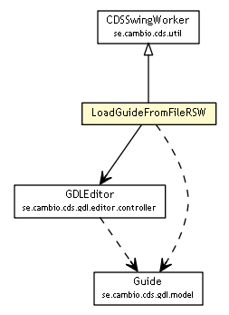

se.cambio.cds.gdl.editor.controller.sw
Class LoadGuideFromFileRSW

java.lang.Object
 javax.swing.SwingWorker<Object,Object>
se.cambio.cds.util.CDSSwingWorker
se.cambio.cds.gdl.editor.controller.sw.LoadGuideFromFileRSW
javax.swing.SwingWorker<Object,Object>
se.cambio.cds.util.CDSSwingWorker
se.cambio.cds.gdl.editor.controller.sw.LoadGuideFromFileRSW
- All Implemented Interfaces:
- Runnable, Future<Object>, RunnableFuture<Object>
public class LoadGuideFromFileRSW
- extends CDSSwingWorker
- Author:
- iago.corbal
| Methods inherited from class javax.swing.SwingWorker |
addPropertyChangeListener, cancel, execute, firePropertyChange, get, get, getProgress, getPropertyChangeSupport, getState, isCancelled, isDone, process, publish, removePropertyChangeListener, run, setProgress |
| Methods inherited from class java.lang.Object |
clone, equals, finalize, getClass, hashCode, notify, notifyAll, toString, wait, wait, wait |
LoadGuideFromFileRSW
public LoadGuideFromFileRSW()
LoadGuideFromFileRSW
public LoadGuideFromFileRSW(File guideFile)
executeCDSSW
protected void executeCDSSW()
throws InternalErrorException
- Specified by:
executeCDSSW in class CDSSwingWorker
- Throws:
InternalErrorException
checkParsedGuide
public static boolean checkParsedGuide(String guideSrc,
Guide guide)
done
protected void done()
- Overrides:
done in class SwingWorker<Object,Object>
Copyright © 2013 Cambio. All Rights Reserved.